Hybrid classification method for imbalanced datasets
Tianxiang Gao
August 20, 2015
Contents
- Motivation
- Introduction
- Methodology
- Experimental results
- Conclusion
Motivation
“Learning from Imbalanced Data Sets,” Proc. Am. Assoc. for Artificial Intelligence (AAAI) Workshop, N. Japkowicz, ed., 2000, (Technical Report WS-00-05).
“Workshop Learning from Imbalanced Data Sets II,” International Conference on Machine Learning (ICML), N.V. Chawla, N. Japkowicz, and A. Kolcz, eds., 2003.
N.V. Chawla, N. Japkowicz, and A. Kolcz, “Editorial: Special Issue on Learning from Imbalanced Data Sets,” The ACM Special Interest Group on Knowledge Discovery and Data Mining (SIGKDD) Explorations Newsletter, vol. 6, no. 1, pp. 1-6, 2004.
fraud/intrusion detection
medical diagnosis/monitoring
bioinformatics

direct marketing
Nature of problem
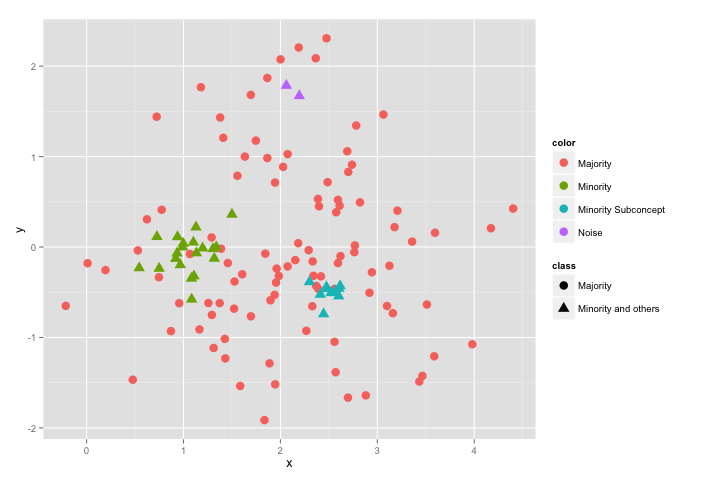Contents
- Motivation
- Introduction
- Methodology
- Experimental results
- Conclusion
Contents
- Motivation
- Introduction
- Classifier - Decision tree
- Evaluate performance
- Nature of problem
- Methodology
- Experimental results
- Conclusion
Classifier
Classification problem is to correctly classifiy the previously unseen testing dataset based on the given training dataset. We deal with binary cases, positive class and negative class.
An algorithm that implements classification is known as a Classifier.
Decision tree is a tree-like classifier.
Dataset of Playing Tennis
| Outlook | Temp. | Humidity | Windy | Play |
|---|---|---|---|---|
| Sunny | Hot | High | False | No |
| Sunny | Hot | High | True | No |
| Overcase | Hot | High | False | Yes |
| ... | ... | ... | ... | ... |
| Rainy | Mild | High | True | No |
Decision Tree
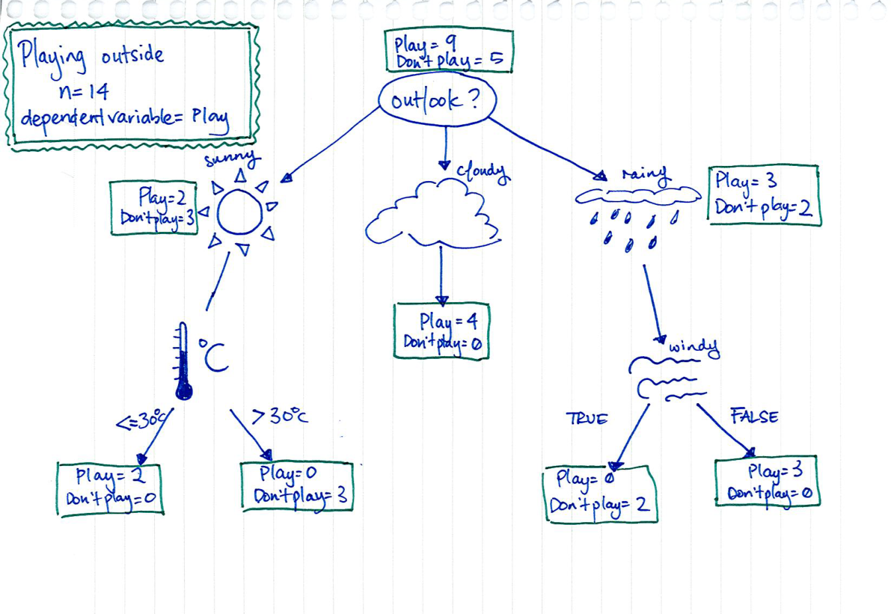-Matt Tanner
Contents
- Motivation
- Introduction
- Classifier - Decision tree
- Evaluate performace
- Nature of problem
- Methodology
- Experimental results
- Conclusion
Why?
- Multiple classifiers are available
- For each classifier, multiple choices are available for settings
- To choose best classifier
Cutoff value
Most algorithms classify via a 2-steps process:
- Compute probability of belonging to $positive$ class.
- Compare to cutoff value, and classify accordingly.
Default cutoff value is 0.5
- If >= 0.5, classify as $positive$.
- If < 0.5, classify as $negative$.
Confusion Matrix
| Predicted + | Predicted - | |
|---|---|---|
| Actual + | True Positive (TP) | False Negative (FN) |
| Actual - | False Positive (FP) | True Negative (TN) |
Accuracy
$ ACC = \frac{TP+TN}{TP + TN + FN + FP}$
May not very useful if imbalanced datasets.
TPR & FPR
True positive rate (TPR) $= \frac{TP}{TP + FN} $
False positive rate (FPR) $= \frac{FP}{FP + TN} $
ROC curve
In statistics, a receiver operating characteristic (ROC), or ROC curve, is a graphical plot that illustrates the performance of a binary classifier system as its discrimination threshold is varied. The curve is created by plotting the true positive rate against the false positive rate at various threshold settings.
-Wikipedia
ROC & AUC

Area Under the ROC curve (AUC) is to quantify the overal performance of a classifier.
Class Balance Accuracy
$CBA =\frac{\sum_{i=1}^{k} \frac{C_{ii}}{max(C_{i.}, C_{.i}) } }{k}$where $C_{i.} = \sum_{j=1}^{k} C_{ij} $ and $C_{.i} = \sum_{i=1}^{k} C_{ji} $.
-L. Mosley and S. Olafsson 2013.
Confusion Matrix
| Predicted + | Predicted - | |
|---|---|---|
| Actual + | True Positive (TP) | False Negative (FN) |
| Actual - | False Positive (FP) | True Negative (TN) |
Contents
- Motivation
- Introduction
- Classifier - Decision tree
- Evaluate performance
- Nature of problem
- Methodology
- Experimental results
- Conclusion
Nature of problem
Overlap, within-class imbalance, disjunct rules, authenticity of data.
Contents
- Motivation
- Introduction
- Methodology
- Experimental results
- Conclusion
Contents
- Motivation
- Introduction
- Methodology
- Sampling
- Instance Selection
- Hybrid method
- Experimental results
- Conclusion
Sampling
- Undersampling
- Oversampling (with replacement)
- SMOTE
Under-sampling the majority class enables better classifiers to be built than over-sampling the minority class.
If replicate the minority class, the decision region for the minority class becomes very specific and will cause new splits in the decision tree...in essence, overfitting.
Replication of the minority class does not cause its decision boundary to spread into the majority class region.
- Chawla, Nitesh V., et al 2002.
SMOTE
SMOTE stands for Synthetic Minority Over-sampling Technique
- Chawla, Nitesh V., et al 2002.
SMOTE
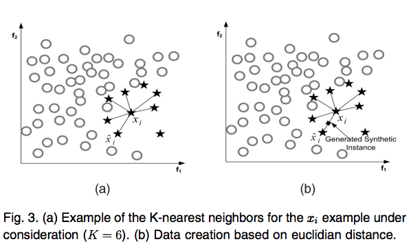- He, Haibo, Learning from imbalanced datasets 2009
Continuous - $x_{new}=x_i+(\hat{x}_i-x_i)\times \delta$
Categorical - $x_{new}=majorityVote(x_i)$
Contents
- Motivation
- Introduction
- Methodology
- Sampling
- Instance Selection
- Hybrid method
- Experimental results
- Conclusion
Instance Selection
Selects subset of training dataset such that removes superfluous instances, maintain performances.
Greedy Selection
Greedy selection is a two-steps wrapper method:generates a number of candidate subsets, and starts with one candidate subset and continuouly combines the other subsets if combining improves the performance of classifier.
- W. Bennette and S. Olafsson 2013.
Contents
- Motivation
- Introduction
- Methodology
- Sampling
- Instance Selection
- Hybrid method
- Experimental results
- Conclusion
Hybrid Method
- Hyrid method is a combination method of SMOTE and greedy selection.
-
- Generate synthetic instances for minority class, and combines those synthetic instances with majority instances.
- Select the ideal subset from the SMOTEd instances by using greedy selection as the final training dataset.
Contents
- Motivation
- Introduction
- Methodology
- Experimental results
- Characteristics of Datasets
- Results
- Conclusion
Characteristics of Datasets
4 well-known imbalanced datasets in UCI machine learning repository, and one medical dataset

- Chawla, Nitesh V. 2002.
- Gang Wu 2003.
- Nathalie Japkowicz 2004.
- Haibo He 2009.
Contents
- Motivation
- Introduction
- Methodology
- Experimental results
- Characteristics of Datasets
- Results
- Conclusion
Results
Randomly select 4/5 of a dataset as original training dataset, and the rest is testing dataset.
Implement those strategies to preprocess the dataset and we got four different training datasets: Control, Greedy Selection, SMOTE, and Hybrid.
Fit those four different training datasets through regular decision tree.
Predict the test dataset.
Process these steps over 100 times among each dataset. Then, evaluate predications through computing AUC, CBA, and ACC.
Dataset: G7
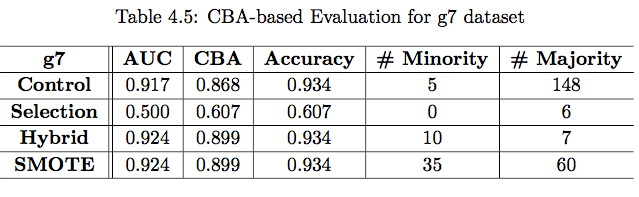


Dataset: car3
 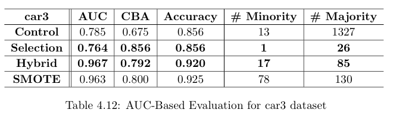
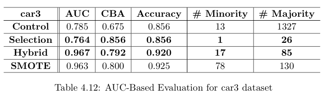
Dataset: yeast5
 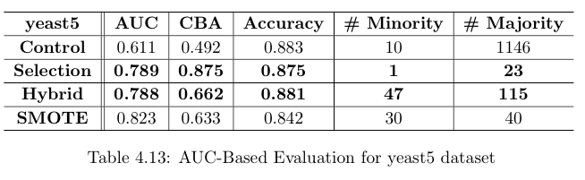
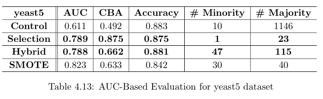
Dataset: medical
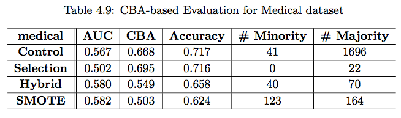 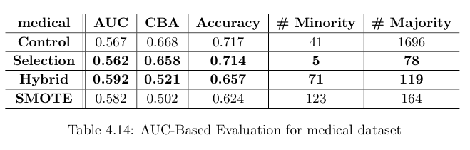Analysis of Hybrid Method
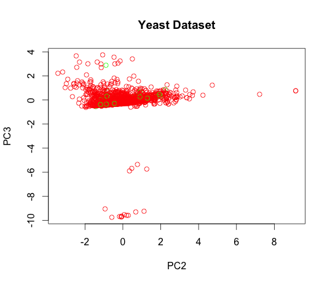 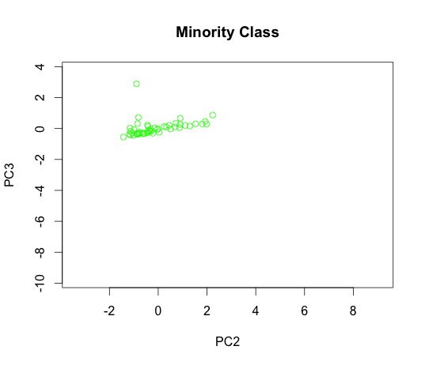Analysis of Hybrid Method
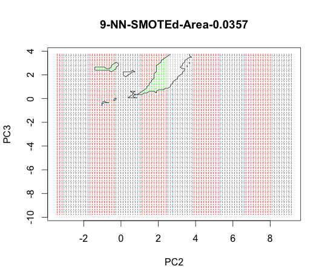 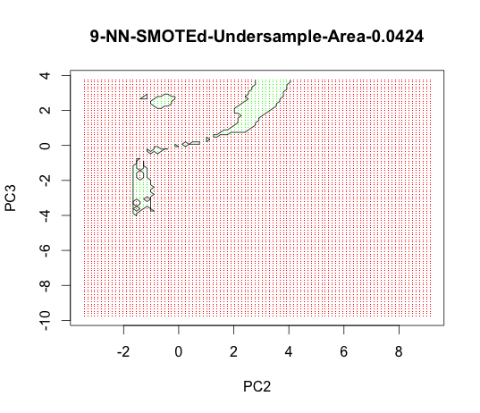 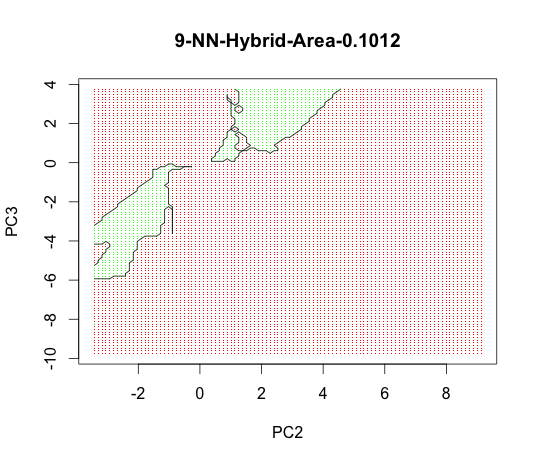Contents
- Motivation
- Introduction
- Methodology
- Experimental results
- Conclusion
Conclusion
- Hybrid Classification method makes decision tree works better.
- Robust
- Selecting an appropriate assessment metric is essential to wrapper-based method.
- Comprehensive assessment metric works better than non-comprehensive.